GLAM-SLAM：通过流致密化与空间分解实现实时大规模高斯建图GLAM-SLAM: Real-time Gaussian Large-scale Mapping via Flow Densification and Spatial Decomposition
直接命中实时大规模 Gaussian SLAM，针对长序列显存与稠密初始化给出完整设计，并公开代码；摘要仍缺少轨迹精度、显存增长和动态场景量化细节。
一句话工作总结
以特征 SLAM 前端、稀疏锚点网格、极线流致密化和空间分区实现长序列实时 3DGS SLAM。
摘要
GLAM-SLAM 是面向大规模室外场景的实时、解耦式 Gaussian-splatting monocular SLAM。系统使用稳健的 feature-based SLAM frontend 进行轻量跟踪，建图侧采用结构化 sparse anchor grid，以便在长序列上控制表示规模并维持场景一致性。为满足 3DGS 的稠密初始化需求，方法基于 epipolar constraints 提出 geometry-based flow-densification anchoring；同时把建图视为 multi-scene problem，通过空间分区和带空间归纳偏置的 MLP 初始化生成局部 Gaussians。在 KITTI Odometry、Oxford RobotCar 和 Málaga 长序列上，摘要报告重建质量比次优方法提升 15%，并保持实时和长序列扩展能力。
Existing Gaussian-splatting-based monocular Simultaneous Localization and Mapping (SLAM) systems are either tailored to short sequences, are not real-time, or suffer from prohibitive GPU memory requirements, limiting their applicability in realistic, long-horizon scenarios. To address this, we present GLAM-SLAM, a real-time, decoupled Gaussian-splatting SLAM system designed for large-scale outdoor scenes. We ensure lightweight tracking using a robust, feature-based SLAM frontend, while for mapping, we adopt a structured, sparse anchor grid representation that ensures scalable operation and maintains scene coherence across long-term sequences. To satisfy the dense initialization requirements of 3D Gaussian Splatting (3DGS), we introduce a geometry-based flow-densification anchoring strategy using epipolar constraints. Furthermore, by treating mapping as a multi-scene problem, we propose a scene-partitioning strategy that introduces a strong spatial inductive bias via MLP initializations to generate localized Gaussians. We evaluate our system on the challenging, long-sequence KITTI Odometry, Oxford RobotCar, and M'alaga datasets. Extensive ablations and comparisons demonstrate a 15% improvement in reconstruction quality over the second-best performer, while maintaining real-time performance and the ability to scale to longer sequences. Code is publicly available for the benefit of the community.
中文解读摘录
- 作者：Panagiotis Mermigkas, Argyris Manetas, Petros Maragos
- 价值判断：今天最直接的 SLAM 新作，明确针对现有 Gaussian-splatting monocular SLAM 在长序列、实时性和 GPU 内存上的瓶颈。
- 技术要点：跟踪侧采用稳健的 feature-based SLAM frontend；建图侧使用结构化 sparse anchor grid，并以 epipolar constraints 驱动 flow-densification anchoring；再把大范围建图拆为 multi-scene problem，通过空间分区和局部 MLP 初始化生成 Gaussians。
- 关键结果与边界：在 KITTI Odometry、Oxford RobotCar 和 Málaga 长序列上，摘要报告重建质量比次优方法提升 15%，同时保持实时并可扩展到更长序列。需核查 tracking 指标、显存随路程增长曲线、分区边界一致性及动态物体处理。
- 链接：arXiv · PDF · 项目页 · 代码
图表/页面预览

{kind=link}
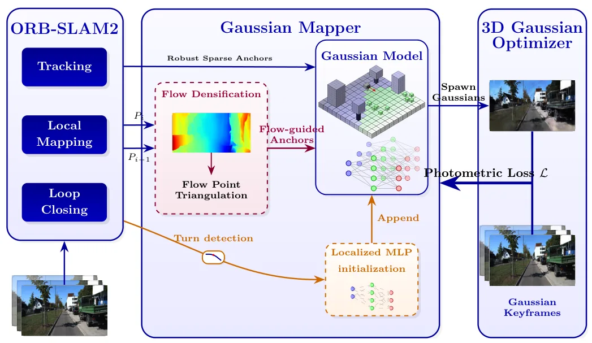
{kind=link}
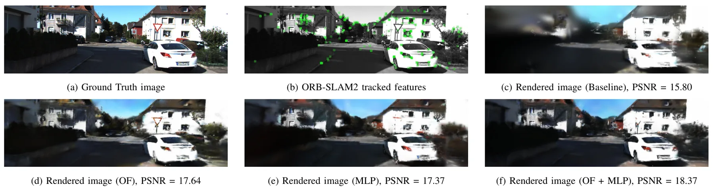
{kind=link}
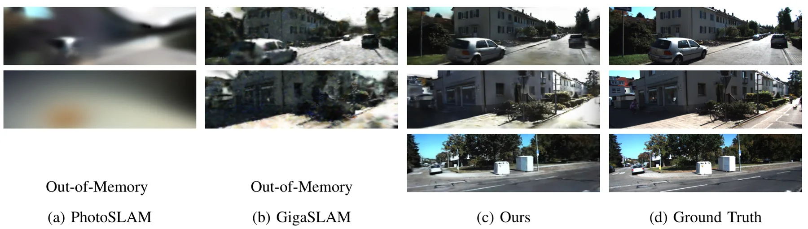
{kind=link}
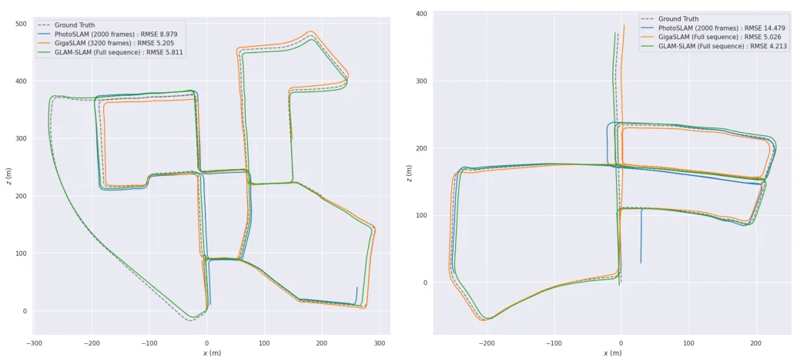
{kind=link}
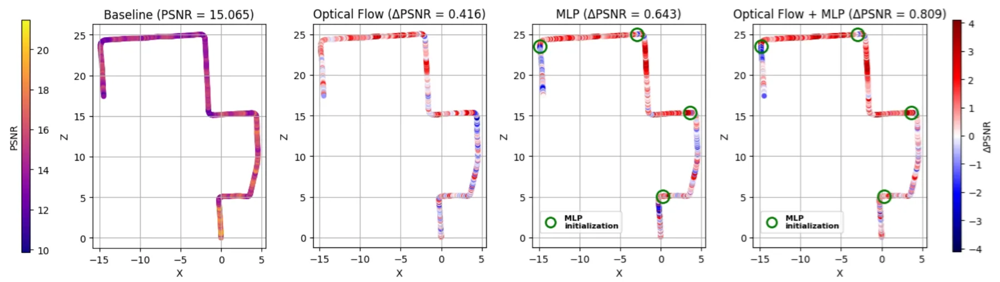
{kind=link}
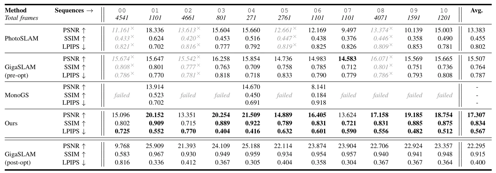
{kind=link}
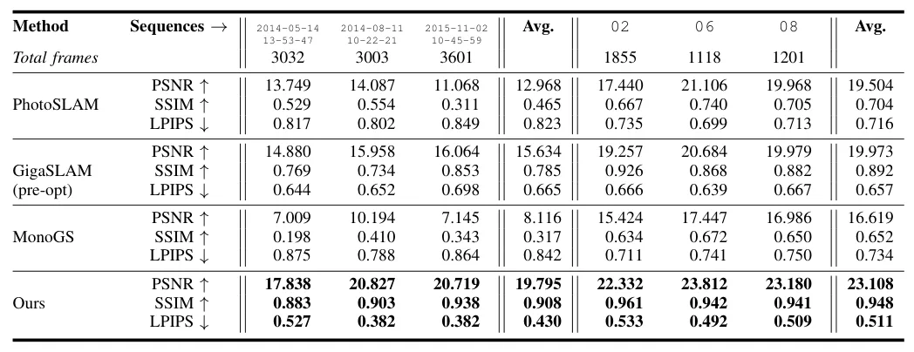
{kind=link}
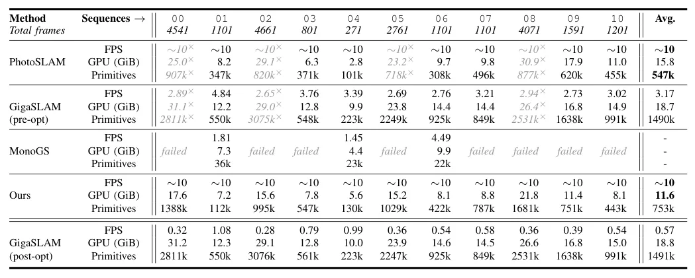
{kind=link}
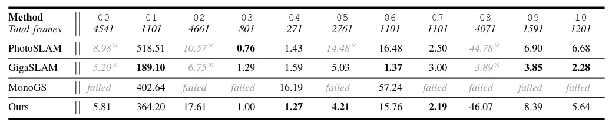
{kind=link}
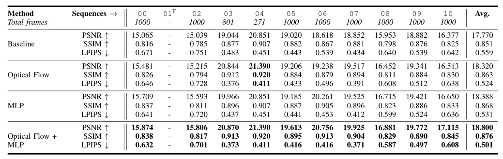
{kind=link}
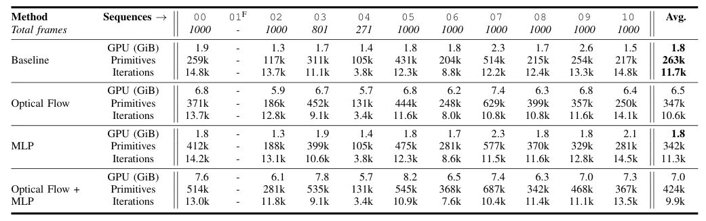